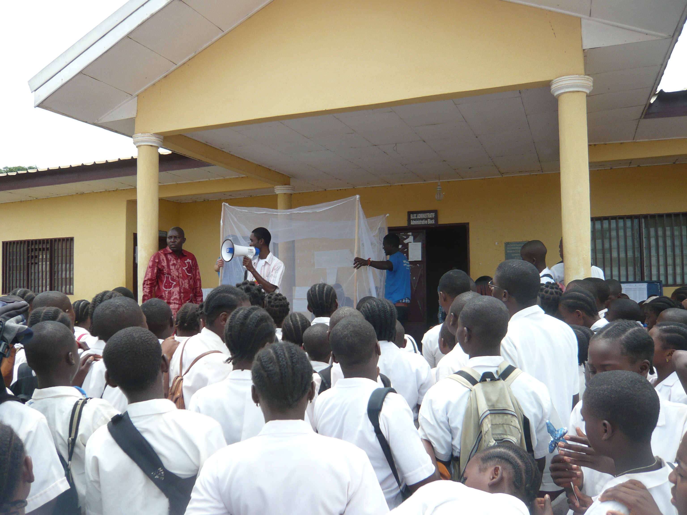
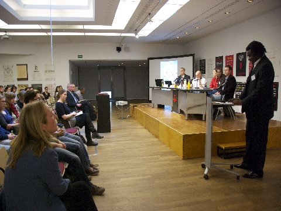

Malaria Free Cameroon ist eine Initiative, die die lokale Bevölkerung vor Malariainfektionen schützen soll.
Malaria Free Cameroon ist eine Initiative, die die lokale Bevölkerung vor Malariainfektionen schützen soll.
Jedes Jahr sterben 1,5 bis 2,7 Millionen Menschen in Afrika an durch Moskitos übertragener Malaria. Säuglinge und schwangere Frauen sind am stärksten gefährdet. In den letzten Jahrzehnten haben sich mit Insektiziden behandelte Moskitonetze (ITN) als das beste Mittel zur Bekämpfung von Malaria in Haushalten erwiesen. Durch sie sind Kinder- und Müttersterblichkeit erheblich gesunken - sowohl in endemischen wie auch in epidemischen Gebieten. Neue Studien in Afrika haben gezeigt, dass Netze die Kindersterblichkeit um bis zu 33% reduzieren können.
Moskitonetze werden jedoch bisher noch kaum in Afrika genutzt und wenn doch, dann werden sie nicht korrekt beschichtet. Netze und Insektizide sind einfach zu teuer für von Malaria bedrohte Familien. Jedes Jahr treten mindestens 24 Millionen Schwangerschaften bei Frauen in malariagefährdeten Gebieten Afrikas auf. Doch weniger als 5% der Schwangeren haben Zugang zu wirksamen Hilfsmaßnahmen.
Das Projekt verfolgt ein vierfaches Ziel:
Bildung und Aufklärung:
Durch Vorträge und Workshops an lokalen Schulen, Gesundheitszentren und bei kulturellen Veranstaltungen soll Bewusstseinsbildung und Sensibilisierung intensiv gestärkt werden. Die Bevölkerung in Risikogebieten erhält hierbei umfassende Informationen zu Prävention, Diagnose und Behandlungsmethoden.
 Bereitstellung von Moskitonetzen:
Bereitstellung von Moskitonetzen:
Die Bereitstellung imprägnierter Moskitonetze, welche mit Hilfe von Sach- und Geldspenden finanziert werden, ist eine wesentliche Maßnahme zum Schutz verletzlicher Gruppen. Besonders wichtige Zielgruppen sind in diesem Zusammenhang schwangere Frauen und Kinder unter 5 Jahren.
Medizinische Unterstützung: Viele Kameruner können sich keine Medikamente zur Behandlung von Malaria leisten. Deshalb unterstützt die Hope Foundation Krankenhäuser durch die Übergabe von kostenlosen Medikamenten. Diese Medikamente wurden von verschiedenen Pharmaunternehmen für einen geringen Preis an die Hope Foundation übergeben.
Organisation der Malaria Week:
Eine in Deutschland durchgeführte Kampagne bildet den Kern unseres Projektes zur Malaria-Prävention. Im Rahmen verschiedener Veranstaltungen werden sowohl Spenden gesammelt als auch kritische Bewusstseinsbildung gestärkt.
Wir begrüßen alle Spenden, ob finanzielle oder in Form von Material oder Ausrüstung, die den weiteren Erfolg dieser lokalen Malaria-Kampagne ermöglichen.
Falls ihr einen Beitrag zum Malaria Free Cameroon Projekt leisten möchtet, kontaktieren Sie uns hier.